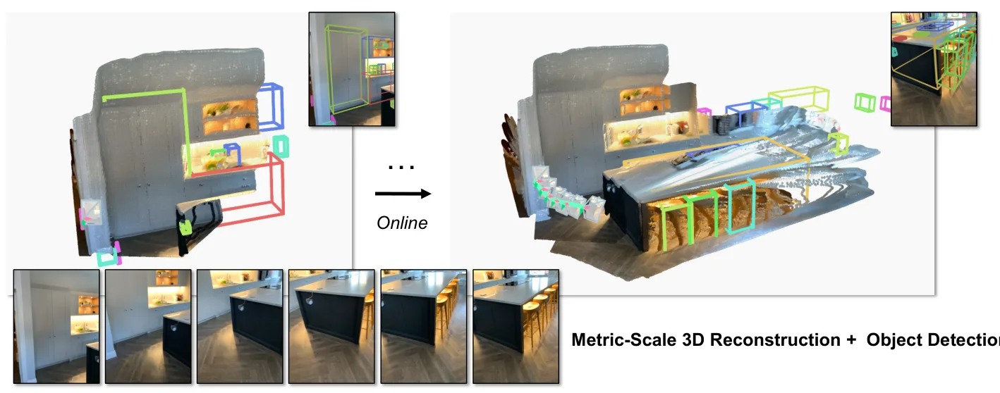
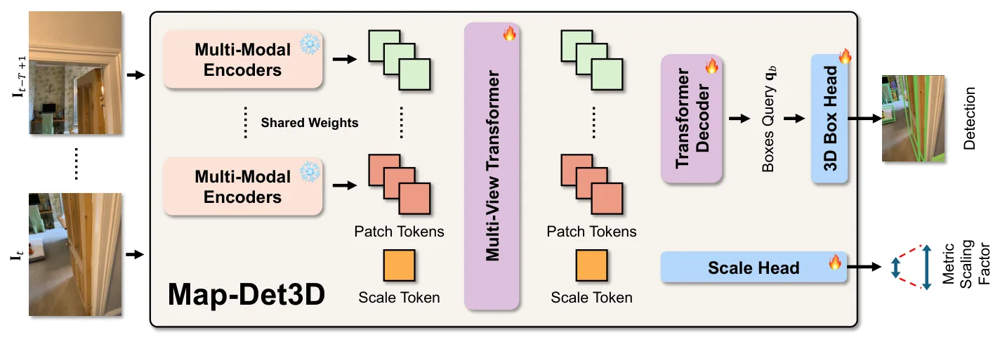
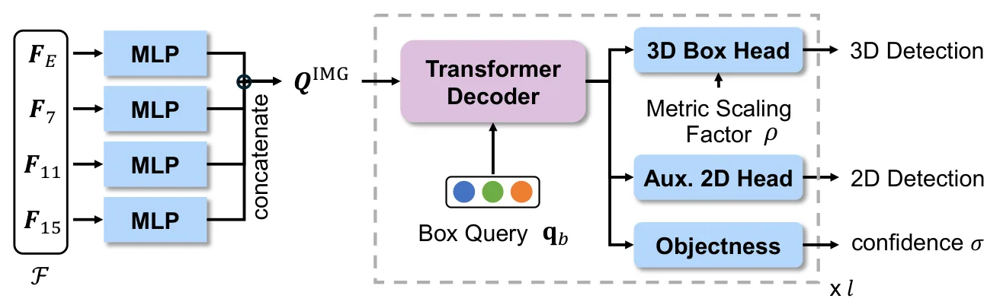

Map-Det3D：以度量前馈三维重建先验支持流式多视图 3D 目标检测Map-Det3D: Metric Feed-Forward 3D Reconstruction Prior for Multi-view 3D Object Detection from Streaming Inputs
度量重建先验与流式视觉输入对定位建图社区有较强交叉价值，且直接触及单目绝对尺度和域迁移；但核心任务是 3D 检测，尺度来源、动态退化与在线开销仍需全文验证。
一句话工作总结
先从短时 RGB 多视图构建度量三维表示，再直接预测 3D boxes，以重建先验替代脆弱的单帧 2D-to-3D lifting。
摘要
Map-Det3D 是一种在线多视图 3D 目标检测模型，旨在绕开单目图像中深度与绝对尺度欠约束、以及传统 2D-to-3D lifting 对尺度先验敏感的问题。方法把短时 RGB 视频窗口映射为多个视图，复用并调优前馈式度量三维重建模型作为 object-aware 几何 backbone，随后直接在重建出的度量三维空间预测 3D boxes。作者称该设计在多个 benchmark 上取得强在线性能，并能在不做适配的情况下稳健迁移到不同相机、运动和环境域。代码与模型已公开。
Metric 3D object detection is a core capability for embodied agents, yet most reliable systems lean on depth sensors, trading away cost, power, and integration simplicity. This motivates monocular 3D detection, which avoids additional constraints, yet it faces a major obstacle: from a single image, depth, and especially absolute scale, are underconstrained. As a result, the prevailing pattern of detecting in 2D and then predicting 3D attributes is often brittle, since modest range errors can dominate 3D localization, and the learned scale prior can fail when cameras, motion, or environments undergo domain shifts. To address this, we propose Map-Det3D, an online multi-view 3D object detection model that brings detection directly into a 3D space reconstructed from RGB. We map a short temporal window into multiple views and repurpose a feed-forward metric 3D reconstruction model as our geometric backbone while tuning its object-aware capabilities. Building on this representation, Map-Det3D directly predicts boxes in metric 3D space, without the widely used 2D-to-3D lifting. Experiments across different benchmarks show that this design supports strong online performance and robust transfer without adaptation, suggesting that training reconstruction priors for detection is a practical route to stable metric 3D detection from monocular video. Code and models are available at https://royyang0714.github.io/Map-Det3D.
中文解读摘录
- 价值：不再从 2D 检测结果预测深度和三维属性，而是先把短时 RGB 视频窗口映射为度量三维表示，再直接在该空间预测 3D boxes；这条路线有望降低单目尺度先验在相机、运动和环境域变化下的脆弱性。
- 方法与结果：复用 feed-forward metric 3D reconstruction model 作为几何 backbone，并针对 object-aware 能力调优。摘要称其在多个 benchmark 上兼具在线性能和无需适配的跨域迁移能力，代码与模型已给出。
- 关注点：优先核查绝对尺度来源、短窗口运动/视差不足时的退化、动态物体对重建先验的影响、检测时延与显存，以及与显式 tracking 或 depth-assisted baseline 的公平比较。
- 链接：arXiv · PDF · 项目页
图表/页面预览
{kind=link}

{kind=link}

{kind=link}
